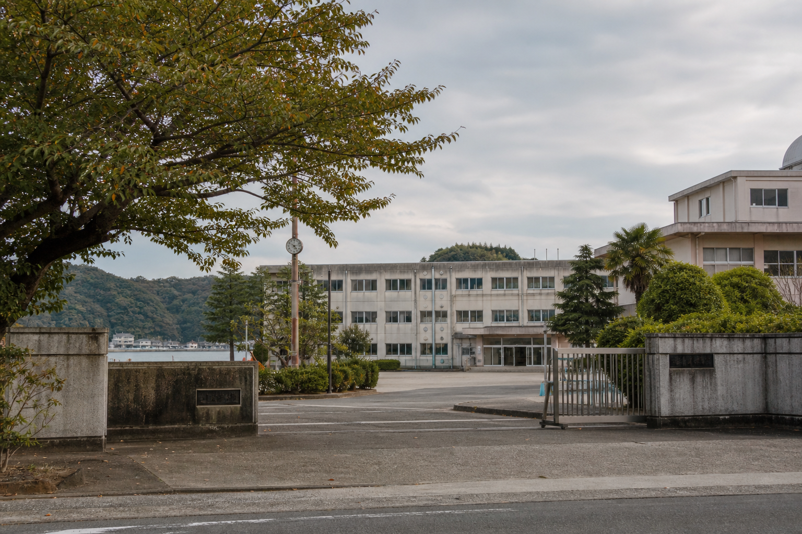

臨時休校のお知らせ
港湾地区での安全確認に伴い、本日は全日臨時休校となりました。 生徒は不要不急の外出を控えてください。
県立未明高校 同窓会

平成18年度 保存ページ
同窓会事務局で保存していた学校・部活動・会報の一部です。
港湾地区での安全確認に伴い、本日は全日臨時休校となりました。 生徒は不要不急の外出を控えてください。
9月19日に予定していた「未明港と消えた灯台計画」の発表は延期します。 新日程は追って連絡します。
期間中の最終下校は18時です。港湾地区を通る通学路は使用しないでください。
卒業生名簿の更新を進めています。住所変更、改姓、勤務先変更がある方は、 同窓会事務局まで郵送でお知らせください。
雨宮澪さんの研究題目は「未明港と消えた灯台計画」。 発表資料の控えは、図書館郷土資料棚 K-29 に返却予定と記録されています。
調査ノートへ戻る吹奏楽部 県南地区合同演奏会に参加。
美術部 文化祭ポスターを掲示。港の夕景を主題に制作。
陸上部 秋季記録会の参加者を発表。
地域史研究部 未明港と消えた灯台計画。発表延期。
写真部 港湾地区の撮影は顧問同伴時のみ可。